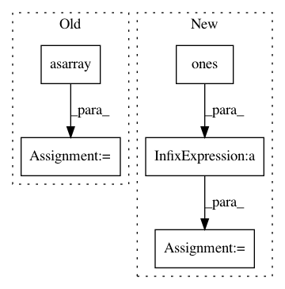

4f9f28da19466e18165feb5a3dab0e82f686b926,tests/unittests_estimators.py,TestConditionalDensityEstimators_2d_gaussian,test_LSCD_with_2d_gaussian,#TestConditionalDensityEstimators_2d_gaussian#,131
Before Change
model.fit(X, Y)
y = np.arange(-1, 5, 0.5)
x = np.asarray([2 for i in range(y.shape[0])])
p_est = model.pdf(x, y)
p_true = norm.pdf(y, loc=2, scale=1)
self.assertLessEqual(np.mean(np.abs(p_true - p_est)), 0.1)
After Change
model.fit(X, Y)
y = np.linspace(-5, 5, num=100)
x = np.ones(100) * 0
p_est = model.pdf(x, y)
p_true = norm.pdf(y, loc=0, scale=2)
self.assertLessEqual(np.mean(np.abs(p_true - p_est)), 0.1)
In pattern: SUPERPATTERN
Frequency: 3
Non-data size: 5
Instances
Project Name: freelunchtheorem/Conditional_Density_Estimation
Commit Name: 4f9f28da19466e18165feb5a3dab0e82f686b926
Time: 2019-01-13
Author: jonas.rothfuss@gmx.de
File Name: tests/unittests_estimators.py
Class Name: TestConditionalDensityEstimators_2d_gaussian
Method Name: test_LSCD_with_2d_gaussian
Project Name: freelunchtheorem/Conditional_Density_Estimation
Commit Name: 6fbef6a3631d94991ab02a9f7411e3b6fd954dfc
Time: 2019-01-12
Author: jonas.rothfuss@gmx.de
File Name: tests/unittests_estimators.py
Class Name: TestConditionalDensityEstimators_2d_gaussian
Method Name: test_NKDE_with_2d_gaussian
Project Name: nilearn/nilearn
Commit Name: a04fdeac1f3d7ad8f0e49393bb48e090c124ef99
Time: 2017-11-17
Author: jerome@dockes.org
File Name: nilearn/datasets/tests/test_atlas.py
Class Name:
Method Name: test_fetch_atlas_talairach